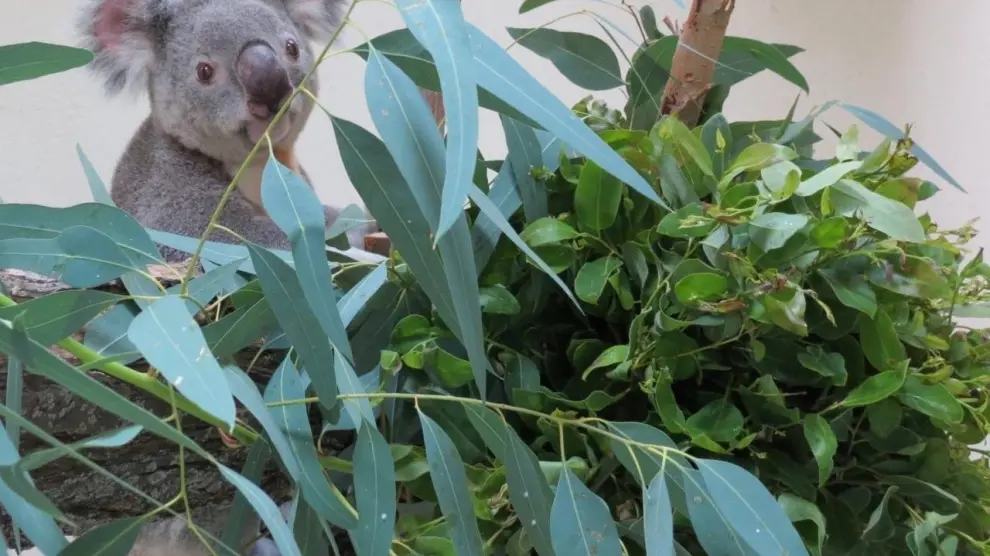
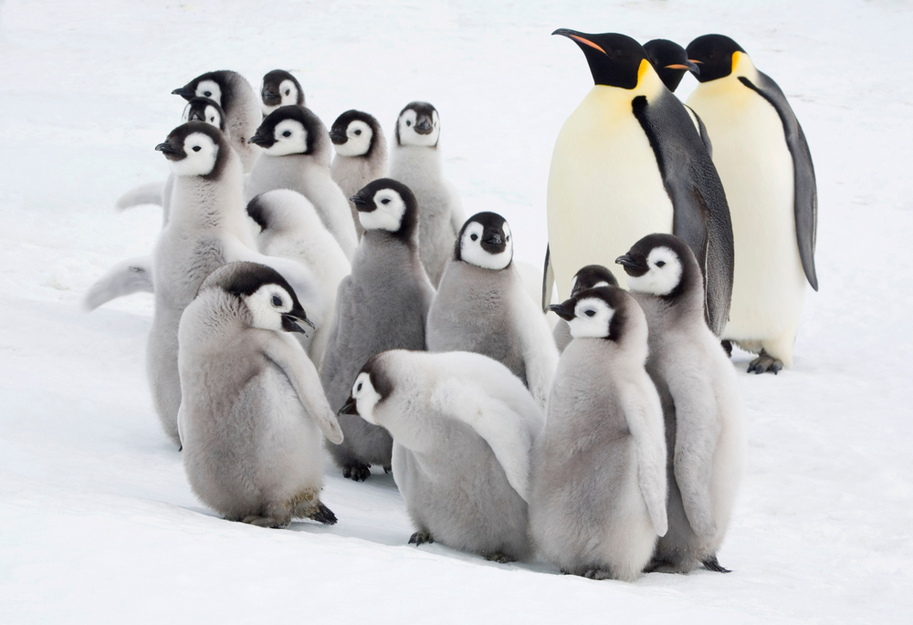
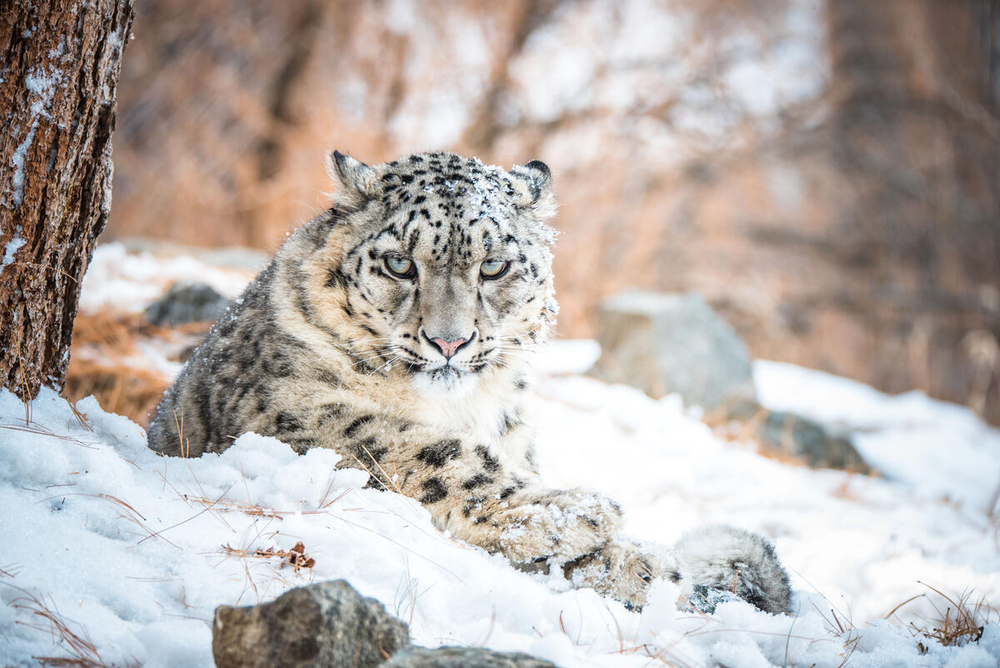
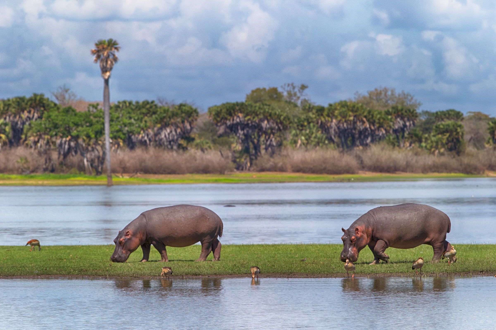
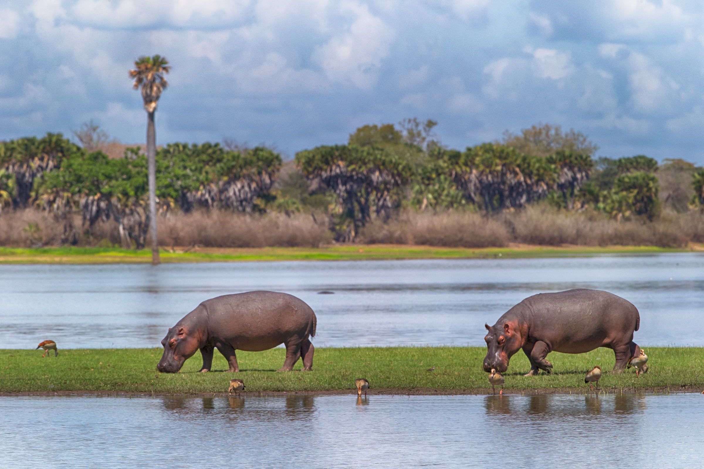

El cambio climatico y sus efectos en los animales
El cambio climático es un fenómeno global que afecta a todos los seres vivos en la Tierra, incluyendo a los animales. A medida que las temperaturas aumentan y los patrones climáticos cambian, muchas especies se ven obligadas a adaptarse o enfrentar la extinción. Algunos de los efectos más comunes del cambio climático en los animales incluyen:
- Alteración de hábitats:Muchas especies dependen de hábitats específicos para sobrevivir. El calentamiento global puede provocar la pérdida de estos hábitats, como los arrecifes de coral y los bosques.
- Desplazamiento de especies: A medida que las condiciones climáticas cambian, algunas especies se ven obligadas a migrar a nuevas áreas en busca de condiciones más favorables. Esto puede llevar a conflictos con otras especies y afectar la biodiversidad local.
- Cambios en los patrones de reproducción: El cambio climático puede alterar los ciclos de reproducción de muchas especies, lo que puede afectar la supervivencia de las crías y la estabilidad de las poblaciones.
- Aumento de enfermedades: Las temperaturas más cálidas pueden favorecer la propagación de enfermedades entre las poblaciones animales, lo que puede tener un impacto devastador en ciertas especies.
En resumen, el cambio climático representa una amenaza significativa para la fauna mundial. Es crucial tomar medidas para mitigar sus efectos y proteger a las especies vulnerables antes de que sea demasiado tarde.
Animales en peligro por culpa del cambio climatico
Koala
El koala, un marsupial nativo de Australia, se encuentra en peligro debido a la pérdida de hábitat causada por el cambio climático. Los incendios forestales, exacerbados por las altas temperaturas y la sequía, han destruido vastas áreas de eucaliptos, que son esenciales para su alimentación y refugio. Además, el aumento de las temperaturas afecta su capacidad para regular su temperatura corporal, lo que puede llevar a un estrés térmico significativo.
Oso Polar
El oso polar, una especie emblemática del Ártico, está gravemente amenazado por el cambio climático. La disminución del hielo marino, causada por el cambio climatico, afecta su capacidad para cazar focas, su principal fuente de alimento. A medida que el hielo se derrite, los osos polares se ven obligados a nadar largas distancias, lo que puede llevar a la fatiga y la inanición. Además, la pérdida de hábitat afecta su reproducción y la supervivencia de las crías.
Elefante Asiatico
El elefante asiático está cada vez más amenazado por el cambio climatico. Las olas de calor extremo y las sequías prolongadas reducen drásticamente el acceso al agua y a los alimentos, provocando la muerte de muchos ejemplares por deshidratación y hambre. Además, los cambios en los patrones de lluvia afectan la vegetación de la que dependen, y los recursos hídricos se vuelven más escasos. Aunque la acción humana sigue siendo una amenaza importante, el impacto del cambio climático está acelerando la disminución de la población de elefantes asiáticos, poniendo en peligro su supervivencia a largo plazo.
Estadísticas de Muertes de Animales en Peligro
| Especie | Causa de Muerte Más Notable | Estadísticas y Eventos Clave |
|---|---|---|
| Koalas | Incendios forestales | Se estima que más de 61,000 koalas murieron directa o indirectamente en los incendios forestales de Australia de 2019-2020. |
| Osos Polares | Inanición por pérdida de hábitat | No hay cifras exactas de muertes anuales. La amenaza principal es el deshielo del Ártico, que impide a los osos cazar focas y los lleva a morir de hambre. |
| Elefantes Asiáticos | Conflictos con humanos | Más de 400 elefantes al año mueren en Sri Lanka debido a conflictos con comunidades locales (por envenenamiento, trampas o disparos). |
| La extinción de estas especies es una alerta para el planeta. | ||
Otros aniamles
  
